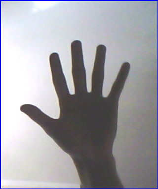
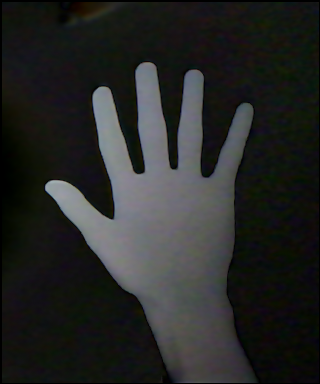
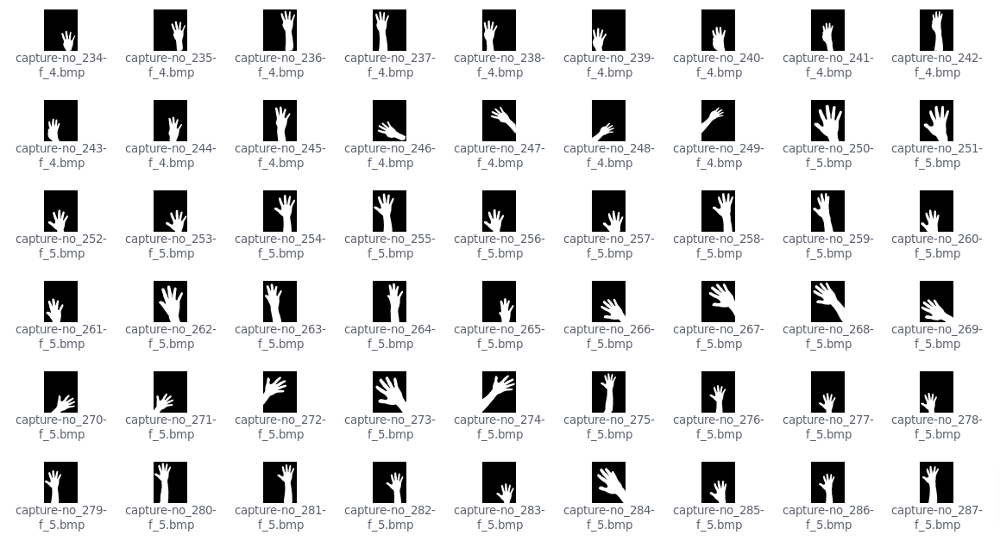
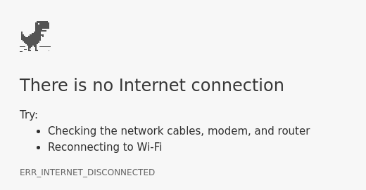

Hand Gesture Recognition
Камераар хүлээн авч буй зургуудыг ашиглах бөгөөд танилтыг сайжруулахын тулд гар нь орчноос өөр өнгөтэй байх хэрэгтэй.
# OpenCV
import cv2
cap = cv2.VideoCapture(0)
while True:
ret, img = cap.read()
Камернаас зураг унших (OpenCV)
| Арын фон |  Үндсэн зураг |  Арын фоныг хассан | Зааглах |
# Background
img = cv2.absdiff(bgImg, image)
# Gray
gray = cv2.cvtColor(img, cv2.COLOR_BGR2GRAY)
# Gaussian Blur
blur = cv2.GaussianBlur(gray, (11, 11), 0)
# Threshold
ret, thresh = cv2.threshold(blur, threshold, 255, cv2.THRESH_BINARY)
# Gaussian Blur
thresh = cv2.GaussianBlur(thresh, (3, 3), 0)
|
|
| Гарын өнцгүүд дээрх X, Y координатуудыг олох |
| Countours | Convex hull | Convexity defects |
cv2.findContours()
cv2.convexHull()
cv2.convexityDefects()
Зурагнаас олж буй шинж чанаруудыг гарын хөдөлгөөн бүрт хадгалан нийт 300 ширхэг жишээ өгөгдөл цуглуулсан.
Цуглуулсан өгөгдлүүдээ SVM (Support vector machine) машин сургалтын аргыг ашиглан сургаж, танилтанд ашигласан.
# scikit-learn svm
from sklearn import svm
# Train data
tdata = [[...],[...]...]
tlabel = [...]
clf = svm.SVC(kernel='linear', C=1.0)
clf.fit(tdata, tlabel)
# Predict
clf.predict([coords])
Зурагнаас таньсан дүрснээс хамаарч тоглоомонд зохих үйлдлүүдийг хийх

# PyAutoGUI
import pyautogui
# Queue
last_predict = deque([0, 0, 0])
# Play Dino
last_predict.popleft()
last_predict.append(data.clf.predict([coords]))
pred = func.most_common(last_predict)
if prev != pred:
if prev == 0 and pred == 5 and status_dino:
pyautogui.press('space')
prev = pred
| Хуруу | Танилтын хувь |
|---|---|
| 0 | 95% |
| 1 | 90% |
| 2 | 70% |
| 3 | 25% |
| 4 | 90% |
| 5 | 100% |
Орчин болон гар хоорондоо ялгаатай өнгөтэй үед арын фоныг орж ирж буй зургаас хасахад гарыг бүрэн ялгаж авч чадсан. Threshold хийсэн зургаас findContours, convexHull, convexityDefects функцуудыг ашиглан гарын онцгой цэгүүдийг тооцоолж олсноор тэдгээрийг машин сургалтын SVM аргаар ангилан орж ирсэн зургаас гар ямар хэлбэр гаргаж байгааг олох боломжтой бөгөөд боломжийн үр дүнд хүрсэн. Цааш Convex hull аргаар олсон цэгүүдийг оновчтой хуваарилж, SVM-ын параметрүүдийг өөрчилж, тохиромжтой утгуудыг олсноор танилтыг сайжруулах боломжтой.